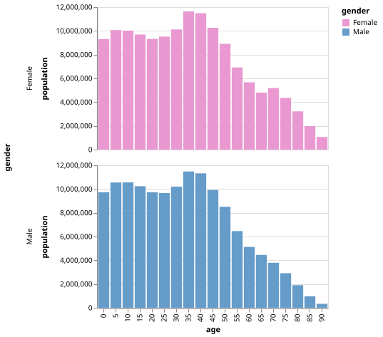
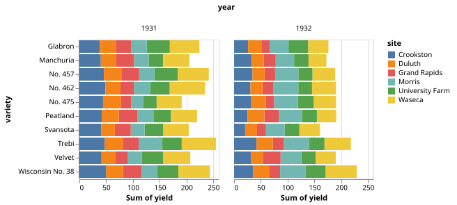
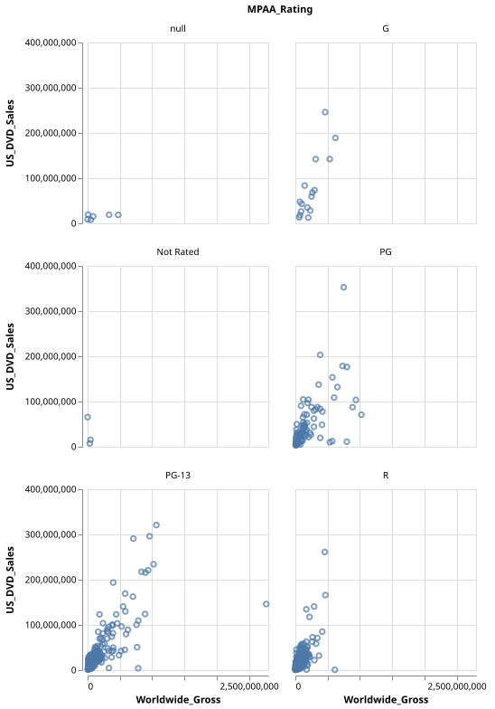
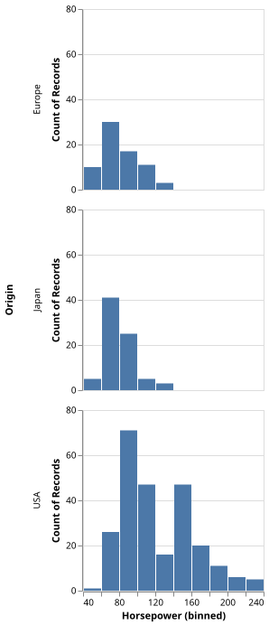
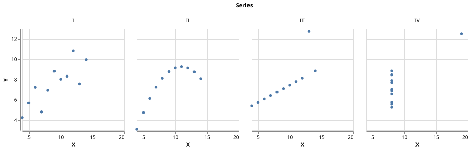
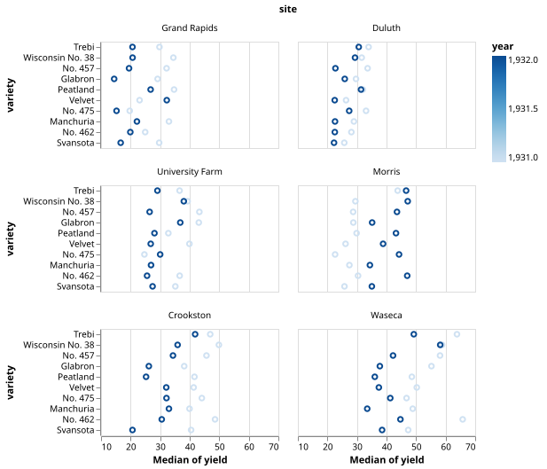
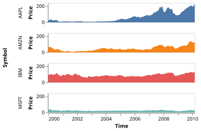

Faceting (Trellis Plot / Small Multiples)
Trellis Bar Chart
using VegaLite, VegaDatasets
dataset("population") |>
@vlplot(
:bar,
transform=[
{filter="datum.year==2000"},
{calculate="datum.sex==2 ? 'Female' : 'Male'",as=:gender}
],
row="gender:n",
y={"sum(people)", axis={title="population"}},
x="age:o",
color={"gender:n", scale={range=["#EA98D2", "#659CCA"]}},
width={step=17}
)
Trellis Stacked Bar Chart
using VegaLite, VegaDatasets
dataset("barley") |>
@vlplot(:bar, column="year:o", x="sum(yield)", y=:variety, color=:site)
Trellis Scatter Plot
using VegaLite, VegaDatasets
dataset("movies") |>
@vlplot(:point, columns=2, wrap="MPAA_Rating:o", x=:Worldwide_Gross, y=:US_DVD_Sales)
Trellis Histograms
using VegaLite, VegaDatasets
dataset("cars") |>
@vlplot(
:bar,
x={
:Horsepower,
bin={maxbins=15}
},
y="count()",
row=:Origin
)
Trellis Scatter Plot showing Anscombe's Quartet
using VegaLite, VegaDatasets
dataset("anscombe") |>
@vlplot(
:circle,
column=:Series,
x={:X, scale={zero=false}},
y={:Y, scale={zero=false}},
opacity={value=1}
)
Becker's Barley Trellis Plot
using VegaLite, VegaDatasets
dataset("barley") |>
@vlplot(
:point,
columns=2,
height={step=12},
wrap={"site:o", sort={op=:median, field=:yield}},
x={"median(yield)", scale={zero=false}},
y={
"variety:o",
sort="-x"
},
color=:year
)
Trellis Area
using VegaLite, VegaDatasets
dataset("stocks") |>
@vlplot(
:area,
width=300,height=40,
transform=[{filter="datum.symbol !== 'GOOG'"}],
x={
"date:t",
axis={title="Time",grid=false}
},
y={
:price,
axis={title="Price",grid=false}
},
color={
:symbol,
legend=nothing
},
row={
:symbol,
header={title="Symbol"}
}
)